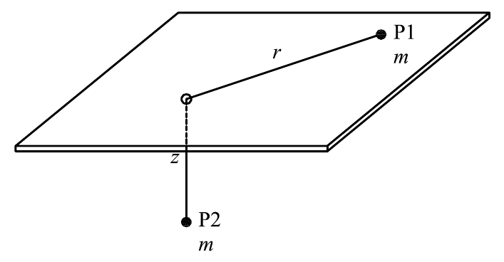

Topic 4: Angular Momentum and Central Forces - Problem Sets
Particle Attracted to the Origin by $F = m\mu/r^\alpha$
Original statement · Problems.pdf, p. 29(Advanced problem.) A point particle $P$ of mass $m$ is attracted by the origin of coordinates $O$ of the inertial reference frame $S_0$ by a force with magnitude
where $r$ is the distance between $O$ and $P$, and $\mu, \alpha$ are known constants.
-
(a)
Show that the angular momentum vector and the mechanical energy of $P$ are conserved quantities of motion, and that the motion of $P$ occurs in a plane.
-
(b)
Using polar coordinates $(r, \theta)$ in the plane of motion, find a second-order differential equation to solve for $u \equiv 1/r$ as a function of $\theta$ (i.e., $u = u(\theta)$).
-
(c)
Find a first integral of this equation and discuss the limits of motion of $u$ as a function of $\mu/h^2$, $\alpha$, and the value of $u$ and $u' \equiv du/d\theta$ at $t = 0$, where $h$ is the magnitude of the angular momentum vector about the origin per unit mass. For $\alpha = 1, 2, 3,$ and $4$, determine under which conditions: (i) the particle escapes to infinity ($u = 0$); (ii) the particle reaches $r = 0$ ($u \to \infty$); (iii) the particle oscillates between two values of $u$.
Hint: try to solve first the problem with $\alpha = 2$, and then try the other values.
Worked Solution [ Click to Expand ]
Reference Frames, Bases and Coordinates
A point particle $P$ of mass $m$ is attracted by the origin $O$ of the inertial frame $S_0$ by a force of magnitude $m\mu/r^\alpha$, where $r$ is the distance from $O$ to $P$ (Problems.pdf, p. 29; the official text calls the strength $\alpha$ and the exponent $\beta$, see the notation note of the Problem Set). The statement asks to prove that the angular momentum and the mechanical energy are conserved and that the motion is planar, to find the second-order equation of $u$ as a function of $\theta$, and to discuss with a first integral when the particle escapes, reaches $O$ or oscillates, for the exponents 1, 2, 3 and 4. The solution follows the Newtonian approach of Notes.pdf, Sec. 7.1 to Sec. 7.7, and the derivation of the central force problem of Notes.pdf, Sec. 4.8.1 and Notes.pdf, Sec. 8.3, with the general exponent in place of the inverse square.
| Item | Definition |
|---|---|
| Fixed (inertial) frame | $S_0 = \{O;\ \mathcal B_0\}$, origin at the attracting centre (Notes.pdf, Eq. 2.1) |
| Fixed basis | $\mathcal B_0 = \{\mathbf i, \mathbf j, \mathbf k\}$, right-handed; $\mathbf k$ is taken along the angular momentum $\mathbf H_{O,0}$, which part (a) proves to be constant, so that the plane of the motion is the plane $Oxy$ (Notes.pdf, Sec. 8.2) |
| Polar basis | $\mathcal B_1 = \{\mathbf e_r, \mathbf e_\theta, \mathbf k\}$, $\mathcal B_0$ turned by $\theta$ about $\mathbf k$; $\mathbf e_r$ points from $O$ towards $P$ (Notes.pdf, Eq. 8.2) |
| Coordinates | $r$, the distance $OP$; $\theta$, the polar angle of $P$ measured from $\mathbf i$, counterclockwise about $\mathbf k$; $u = 1/r$ and $u' = du/d\theta$ (statement) |
| Hypotheses | $S_0$ inertial; $\mu \gt 0$ (attraction) and the exponent $\alpha$ constant, discussed for $\alpha = 1, 2, 3, 4$; no other force acts; $h \ne 0$ in parts (b) and (c) (with zero angular momentum the motion is radial: last limiting case) |
| Constraints | none: $P$ is a free particle ([Lecture 3, Slide 4]) |
| Degrees of freedom | 3 in space; 2 in the plane of the motion ($r$, $\theta$) once part (a) has proved that the motion is planar |
| Data | $m$ [kg], $\mu$ [m$^{\alpha+1}$ s$^{-2}$], $\alpha$ [1]; initial values $u_0 = u(0)$ [m$^{-1}$] and $u_0' = u'(0)$ [m$^{-1}$] |
| Derived constants | $h = \lvert\mathbf r_0^P\times\mathbf v_0^P\rvert$, angular momentum about $O$ per unit mass [m$^2$ s$^{-1}$]; $K = \mu/h^2$ [m$^{\alpha-3}$], the parameter of the discussion (the "$\mu/h^2$" of the statement) |
| Applied force | the attraction $\mathbf F = -\dfrac{m\mu}{r^\alpha}\,\mathbf e_r$, from $P$ towards $O$ |
| Constraint and inertia forces | none: no constraint, and $S_0$ is inertial |
Change of Basis and Position Vector
View along $\mathbf k$, which points out of the paper (⊙) because it is the cross product of $\mathbf i$ (to the right) and $\mathbf j$ (up): a positive rotation about $\mathbf k$ is counterclockwise, as $\theta$ in the figure. $\mathbf e_r$ is $\mathbf i$ turned by $\theta$: in its right triangle the hypotenuse is 1, the adjacent leg $\cos\theta$ lies along $\mathbf i$ and the opposite leg $\sin\theta$ along $\mathbf j$. $\mathbf e_\theta$ is $\mathbf j$ turned by $\theta$: the adjacent leg $\cos\theta$ lies along $\mathbf j$ and the opposite leg $\sin\theta$ along minus $\mathbf i$, because the upward vector turned counterclockwise leans to the left (the minus sign).
Units: dimensionless direction cosines: $[1]$
Meaning: the columns of the matrix are $\mathbf e_r$, $\mathbf e_\theta$ and $\mathbf k$ written in $\mathcal B_0$; $\mathbf e_r$ follows the particle and $\mathbf e_\theta$ is perpendicular to it in the plane of the motion.
In the plane of the motion the segment $OP$ is the hypotenuse $r$ of the right triangle whose leg along $\mathbf i$ is $r\cos\theta$ (adjacent to $\theta$) and whose leg along $\mathbf j$ is $r\sin\theta$ (opposite to $\theta$).
Units: $[r] = [\mathrm{L}]$
Meaning: the position has only a radial component; the attraction acts along minus $\mathbf e_r$, that is along the line $PO$: it is a central force.
Kinematics
Units: $[\dot\theta] = [\mathrm{T^{-1}}]$
Meaning: both unit vectors turn with the particle at the rate $\dot\theta$; $\mathbf k$ is fixed.
Units: $[\dot r] = [r\dot\theta] = [\mathrm{L\,T^{-1}}]$; $[\ddot r] = [r\dot\theta^2] = [\dot r\dot\theta] = [\mathrm{L\,T^{-2}}]$
Meaning: $\dot r$ is the rate at which $P$ moves away from $O$ and $r\dot\theta$ the speed at which it turns round $O$; these are the expressions of Notes.pdf, Eq. 8.3.
Units: $[r^2\dot\theta] = [\mathrm{L^2\,T^{-1}}]$
Meaning: with $\mathbf k$ along $\mathbf H_{O,0}$ the rate $\dot\theta$ is positive: the particle turns counterclockwise about $\mathbf k$, never backwards.
Forces and Equations of Motion
The free-body diagram of $P$ shows a single force, the attraction towards $O$. $S_0$ is inertial, so no inertia force acts, and there is no constraint.
The proof uses vectors of $S_0$ in any basis, not the polar coordinates, so it does not assume that the motion is planar. $O$ is fixed, so its velocity is zero.
Units: $[\mathbf H_{O,0}] = [\mathrm{M\,L^2\,T^{-1}}]$; $[\mathbf M_O] = [\mathrm{M\,L^2\,T^{-2}}]$
Meaning: the line of action of the attraction always passes through $O$, so it has no moment about $O$: the three components of the angular momentum are conserved (three scalar laws), for any exponent.
Units: $[\mathrm{L}][\mathrm{M\,L^2\,T^{-1}}]$ on both sides of the zero
Meaning: the vector $\mathbf H_{O,0}$ is fixed by the previous box, and the position stays perpendicular to it: this is the plane $Oxy$ of the table, with $\mathbf k$ along $\mathbf H_{O,0}$. If $\mathbf H_{O,0}$ is zero the velocity is parallel to the position and the particle moves on a fixed line through $O$ (last limiting case).
Units: $[m\mu\,r^{-\alpha}\,dr] = [\mathrm{M}][\mathrm{L^{\alpha+1}\,T^{-2}}][\mathrm{L^{-\alpha}}][\mathrm{L}] = [\mathrm{M\,L^2\,T^{-2}}]$
Meaning: only the change of the distance to $O$ costs work; the work between two positions depends only on their distances to $O$, not on the path, so the attraction is conservative.
The work of the previous box is integrated from a reference radius $r_*$, where the potential energy is zero, to the radius $r$; $s$ is the integration variable.
Units: $[m\mu\,r^{1-\alpha}] = [\mathrm{M}][\mathrm{L^{\alpha+1}\,T^{-2}}][\mathrm{L^{1-\alpha}}] = [\mathrm{M\,L^2\,T^{-2}}]$; the logarithm is of a ratio of lengths
Meaning: minus the derivative of the potential is the radial component of the force, as it must be. For the exponents above 1 the potential tends to zero far away; for the exponent 1 it grows without bound with $r$, which will forbid the escape.
Units: $[\tfrac12 m v^2] = [V_0] = [\mathrm{M\,L^2\,T^{-2}}]$
Meaning: the only force does work that depends on the distance to $O$ alone, so the kinetic energy gained when $P$ falls towards $O$ is exactly the potential energy lost: the mechanical energy is a second conserved quantity. This completes part (a).
Units: $[\ddot r] = [r\dot\theta^2] = [\mu\,r^{-\alpha}] = [\mathrm{L\,T^{-2}}]$
Meaning: two equations for the two unknown functions $r(t)$ and $\theta(t)$; with the exponent 2 they are Notes.pdf, Eq. 8.5 and Eq. 8.6.
Units: $[h] = [\mathrm{L^2\,T^{-1}}]$; $[h\,u^2] = [\mathrm{L^2\,T^{-1}}][\mathrm{L^{-2}}] = [\mathrm{T^{-1}}]$
Meaning: the $\mathbf k$ component of the conserved angular momentum of part (a), per unit mass; the angular rate grows as the particle approaches $O$.
With $h$ nonzero the rate $\dot\theta = hu^2$ never vanishes, so $\theta$ grows monotonically with $t$ and can replace it as the independent variable: $u = u(\theta(t))$, and primes are derivatives with respect to $\theta$.
Units: $[u''] = [u] = [\mathrm{L^{-1}}]$ ($\theta$ is dimensionless); $[K\,u^{\alpha-2}] = [\mathrm{L^{\alpha+1}\,T^{-2}}][\mathrm{L^{-4}\,T^{2}}][\mathrm{L^{2-\alpha}}] = [\mathrm{L^{-1}}]$
Meaning: the equation of the orbit, free of time. For the exponent 2 it is the linear equation of a forced harmonic oscillator, Notes.pdf, Eq. 8.12; for 3 it is linear and homogeneous; for 1 and 4 it is nonlinear.
Answers and Checks
(c) First integral and limits of the motion
Write $\Phi(u)$ for an antiderivative of $u^{\alpha-2}$: $\Phi(u) = u^{\alpha-1}/(\alpha-1)$ for $\alpha \ne 1$ and $\Phi(u) = \ln(u/u_0)$ for $\alpha = 1$; in both cases its derivative is $u^{\alpha-2}$.
Units: $[u'^2] = [u^2] = [\mathrm{L^{-2}}]$; $[K\,\Phi] = [\mathrm{L^{\alpha-3}}][\mathrm{L^{1-\alpha}}] = [\mathrm{L^{-2}}]$ (for the exponent 1, $K$ is in $\mathrm{L^{-2}}$ and $\Phi$ is dimensionless)
Meaning: a first-order equation for $u(\theta)$: $u'$ is known from $u$ alone, and the constant $E^*$ is fixed by the values $u_0$ and $u_0'$ at the initial instant, as the statement asks.
Units: $[E_0/(m h^2)] = [\mathrm{L^2\,T^{-2}}][\mathrm{L^{-4}\,T^2}] = [\mathrm{L^{-2}}]$
Meaning: the first integral is the energy of part (a) per unit of $m h^2/2$, and $W$ is the effective potential: the centrifugal term $u^2$ (it comes from the kinetic energy of the turning) minus the attraction. For the exponent 1 the constant differs only by the reference of the logarithm.
Units: $[W] = [E^*] = [\mathrm{L^{-2}}]$; $[W'] = [u''] = [\mathrm{L^{-1}}]$
Meaning: $u$ can only take the values where the curve $W$ lies below the level $E^*$; at a simple root $u'$ vanishes and $u''$ pushes $u$ back into the allowed region (a turning point, Notes.pdf, Eq. 4.28). Since $\dot\theta = hu^2$ is positive, $u'$ has the sign of $\dot u$: a growing $u$ means $P$ approaching $O$. Hence (i) escape ($u \to 0$) needs the allowed region to reach $u = 0$; (ii) reaching $O$ ($u \to \infty$) needs it to be unbounded above; (iii) oscillation needs $u_0$ inside a bounded interval of positive values limited by two simple roots.
Exponent 2: inverse square
Units: $[K] = [\mathrm{L^{-1}}]$ for the exponent 2; $e$ is dimensionless
Meaning: $u$ reaches zero only if the cosine can reach $-1/e$, that is if $e \ge 1$ (parabola or hyperbola): the particle escapes, even if it first moves inward and passes the pericentre. $u$ never exceeds $K(1 + e)$, so $O$ is never reached. For $e$ below 1 (negative energy) $u$ oscillates between the pericentre and the apocentre of an ellipse, Kepler's first law.
Exponent 1
Units: $[K] = [\mathrm{L^{-2}}]$ for the exponent 1, so $[\sqrt K] = [\mathrm{L^{-1}}]$
Meaning: the potential well is infinitely deep on both sides: the logarithmic potential grows without bound far away and the centrifugal term near $O$. Any level above the minimum cuts the convex curve exactly twice, so every motion with nonzero angular momentum oscillates between two radii.
Exponent 3
Units: $[K] = [\mathrm{L^{4}\,T^{-2}}]/[\mathrm{L^4\,T^{-2}}] = [1]$ for the exponent 3
Meaning: the attraction and the centrifugal term both vary as $u^3$ in the radial equation, so the sign of $1 - K$ alone decides the type of motion; the three cases follow.
Write $\lambda = \sqrt{1 - K}$, positive.
Units: $[A] = [u_0] = [u_0'] = [\mathrm{L^{-1}}]$; $\lambda$ dimensionless
Meaning: the centrifugal term wins: $W$ is an upward parabola with its minimum at $u = 0$, so the particle reaches infinity along an asymptote; if it starts moving inward it is first reflected at the closest distance $1/A$.
Write $\lambda = \sqrt{K - 1}$, positive.
Units: $[C_1] = [C_2] = [\mathrm{L^{-1}}]$; $\lambda\theta$ dimensionless
Meaning: the attraction wins over the centrifugal term: with $C_1$ positive the growing exponential dominates and $P$ spirals into $O$ (when $C_2$ is negative, $u$ starts at $u_0$ with a positive slope and keeps growing); with $C_1$ negative $u$ falls to zero at the finite angle $\theta_e$. The energy row agrees with the shape of $W$, a downward parabola with its top at $u = 0$: a negative $E^*$ means $C_1$ and $C_2$ of the same sign, both positive, and a fall into $O$.
Units: $[\lambda\,h\,u_0^2] = [\mathrm{L^2\,T^{-1}}][\mathrm{L^{-2}}] = [\mathrm{T^{-1}}]$, so $[t] = [\mathrm{T}]$
Meaning: on the boundary between fall and escape the particle sits on top of the flat-topped barrier of zero level: it spirals outwards with infinitely many turns and never arrives at a finite angle or a finite time; it neither falls nor oscillates.
Units: $[u_0'\theta] = [\mathrm{L^{-1}}]$
Meaning: the attraction exactly balances the centrifugal term for every radius: the circle exists for any radius but any radial push makes the particle spiral in or out.
Exponent 4
Units: $[K] = [\mathrm{L}]$ for the exponent 4; $[u_b] = [u_z] = [\mathrm{L^{-1}}]$, $[W_{\max}] = [\mathrm{L^{-2}}]$
Meaning: a barrier, not a well: there is no minimum at a positive $u$, only the unstable circular orbit $u = u_b$ on top of the barrier.
$E^*$ is fixed by the data, $E^* = u_0'^2 + u_0^2 - \tfrac23 K u_0^3$, and $u_0$ lies in the allowed region.
Units: $[E^*] = [W_{\max}] = [\mathrm{L^{-2}}]$
Meaning: a particle below the barrier stays on its side: outside it escapes (after a reflection at $u_1$ if it was moving in), inside it falls to $O$ (after a reflection at $u_2$ if it was moving out). Above the barrier nothing reflects it, so it escapes if it moves outward and falls if it moves inward. On the separatrix $E^* = W_{\max}$ the cases moving towards $u_b$ approach the unstable circle without reaching it.
Units: $[K\,u^3] = [\mathrm{L}][\mathrm{L^{-3}}] = [\mathrm{L^{-2}}] = [u'^2]$; $[K\,u_b] = [1]$
Meaning: on the separatrix the particle climbs to the top of the barrier and approaches the unstable circular orbit of radius $\mu/h^2$ with infinitely many turns, never reaching it in a finite time: it neither escapes, nor falls, nor oscillates.
Answers
| Part of the statement | Answer |
|---|---|
| (a) Conserved quantities, planar motion | $\mathbf M_O = \mathbf r_0^P\times\mathbf F = \mathbf 0$, so $\mathbf H_{O,0} = m\,\mathbf r_0^P\times\mathbf v_0^P$ is constant; $\delta W_0 = -m\mu r^{-\alpha}dr$ is exact, $V_0 = -m\mu/[(\alpha - 1)r^{\alpha-1}]$ ($\alpha \ne 1$), $V_0 = m\mu\ln(r/r_*)$ ($\alpha = 1$), and $E_0 = \frac12 m v^2 + V_0$ is constant; $\mathbf r_0^P\cdot\mathbf H_{O,0} = 0$, so $P$ moves in the fixed plane through $O$ perpendicular to $\mathbf H_{O,0}$ |
| (b) Equation for $u(\theta)$ | $u'' + u = \dfrac{\mu}{h^2}\,u^{\alpha-2}$, with $h = r^2\dot\theta$ constant |
| (c) First integral | $u'^2 + W(u) = E^*$, $W(u) = u^2 - \dfrac{2\mu}{h^2}\Phi(u)$, $\Phi = \dfrac{u^{\alpha-1}}{\alpha - 1}$ ($\alpha \ne 1$) or $\ln(u/u_0)$ ($\alpha = 1$), $E^* = u_0'^2 + W(u_0)$ ($= 2E_0/(mh^2)$ for $\alpha = 2, 3, 4$); motion only where $W(u) \le E^*$, turning points at $W(u) = E^*$ |
| (c) $\alpha = 1$ | (i) never; (ii) never; (iii) always, between the two roots of $u^2 - \frac{2\mu}{h^2}\ln(u/u_0) = u_0'^2 + u_0^2$ (circle $r = h/\sqrt\mu$ if $u_0 = \sqrt\mu/h$, $u_0' = 0$) |
| (c) $\alpha = 2$ | $u = \frac{\mu}{h^2}[1 + e\cos(\theta - \theta_p)]$, $e = \sqrt{1 + E^*h^4/\mu^2}$, $E^* = u_0'^2 + u_0^2 - 2\frac{\mu}{h^2}u_0$: (i) iff $E^* \ge 0$; (ii) never; (iii) iff $-\mu^2/h^4 \lt E^* \lt 0$, between $\frac{\mu}{h^2}(1 \mp e)$; circle $u = \mu/h^2$ iff $E^* = -\mu^2/h^4$ |
| (c) $\alpha = 3$ | $\mu/h^2 \lt 1$: (i) always. $\mu/h^2 \gt 1$: (ii) iff $u_0' \gt -\sqrt{\mu/h^2 - 1}\,u_0$, (i) iff $u_0' \lt -\sqrt{\mu/h^2 - 1}\,u_0$; boundary $u_0' = -\sqrt{\mu/h^2 - 1}\,u_0$: $u = u_0e^{-\sqrt{\mu/h^2 - 1}\,\theta}$, outward spiral reaching infinity only as $\theta \to \infty$ (infinite time). $\mu/h^2 = 1$: (ii) if $u_0' \gt 0$, (i) if $u_0' \lt 0$, circle if $u_0' = 0$. (iii) never |
| (c) $\alpha = 4$ | with $E^* = u_0'^2 + u_0^2 - \frac{2\mu}{3h^2}u_0^3$, $W_{\max} = \frac{h^4}{3\mu^2}$, $u_b = \frac{h^2}{\mu}$: (i) if $0 \lt E^* \lt W_{\max}$ and $u_0 \lt u_b$, or $E^* \ge W_{\max}$ and $u_0' \lt 0$ (with $u_0 \lt u_b$ when $E^* = W_{\max}$); (ii) if $E^* \le 0$, or $0 \lt E^* \lt W_{\max}$ and $u_0 \gt u_b$, or $E^* \ge W_{\max}$ and $u_0' \gt 0$ (with $u_0 \gt u_b$ when $E^* = W_{\max}$); separatrix $E^* = W_{\max}$ with $u_0 \lt u_b$, $u_0' \gt 0$ or $u_0 \gt u_b$, $u_0' \lt 0$: asymptotic approach to the unstable circle $u = u_b$ (none of the three); circle if $u_0 = u_b$, $u_0' = 0$; (iii) never |
Check against the official key: Problems.pdf, p. 76 lists item 42 with no answer, so there is no key to compare with. Independent checks: the first integral was obtained from the equation of part (b) itself and agrees with the energy of part (a) (check box above); the classification is confirmed by integrating the equation of part (b) numerically (fourth-order Runge-Kutta, step $10^{-4}$ rad, the ratio $\mu/h^2$ set to 1 unless stated, "blow-up" meaning $u$ above $10^6$):
| Exponent | Data $(u_0, u_0')$ | Predicted | Numerical result |
|---|---|---|---|
| 2 | $(1.5, 0)$, $E^* = -0.75$ | (iii) between $0.5$ and $1.5$ | $u \in [0.5000, 1.5000]$ over 60 rad |
| 2 | $(0.5, -0.9)$, $E^* = 0.06$ | (i) | $u = 0$ at $\theta = 0.824$ |
| 1 | $(0.5, 0.3)$, $E^* = 0.34$ | (iii) | $u \in [0.4714, 1.6526]$ over 100 rad |
| 3, $\mu/h^2 = 1/2$ | $(1, 0)$ | (i) at $\theta_e = \pi/(2\sqrt{1/2}) = 2.2214$ | $u = 0$ at $\theta = 2.2214$ |
| 3, $\mu/h^2 = 2$ | $(1, -1.5)$, $C_1 = -0.25$ | (i) at $\theta_e = \frac12\ln 5 = 0.8047$ | $u = 0$ at $\theta = 0.8047$ |
| 3, $\mu/h^2 = 1$ | $(1, -0.1)$ | (i) at $\theta_e = 10$ | $u = 0$ at $\theta = 10.000$ |
| 4 | $(0.5, 0)$, $E^* = 1/6 \lt 1/3$, $u_0 \lt u_b = 1$ | (i) | $u = 0$ at $\theta = 2.078$ |
| 4 | $(1.2, 0)$, $E^* = 0.288 \lt 1/3$, $u_0 \gt u_b$ | (ii) | blow-up near $\theta = 4.06$ |
| 4 | $(0.5, \pm 0.9)$, $E^* = 0.977 \gt 1/3$ | (ii) for $+$, (i) for $-$ | blow-up near $\theta = 3.60$; $u = 0$ at $\theta = 0.524$ |
Units: $[K\,u_c^{\alpha-3}] = [\mathrm{L^{\alpha-3}}][\mathrm{L^{3-\alpha}}] = [1]$; $W''$ is dimensionless
Meaning: the three cases worked above agree: $u_c = \sqrt K$ for the exponent 1 and $u_c = K$ for 2 are minima, with bounded oscillations around them; $u_b = 1/K$ for 4 is the top of the barrier; for 3 the curvature is zero and circles exist only when $K$ equals 1.
Units: $[\ddot r] = [\mu\,r^{-\alpha}] = [\mathrm{L\,T^{-2}}]$; $[\dot r^2] = [V_0/m] = [\mathrm{L^2\,T^{-2}}]$
Meaning: without angular momentum there is no centrifugal barrier: the acceleration always points to $O$. Moving inward, the particle reaches $O$; moving outward, it escapes only if its energy reaches the value zero of the potential at infinity (impossible for the exponent 1, whose potential is unbounded), and otherwise it stops and falls back to $O$, because the radial acceleration of the second row is negative at every distance.
Units: $[t_O] = [h\,u_0\,u_0']^{-1} = \left([\mathrm{L^2\,T^{-1}}][\mathrm{L^{-1}}][\mathrm{L^{-1}}]\right)^{-1} = [\mathrm{T}]$
Meaning: the angular momentum protects $O$ only if the centrifugal term, which grows as the square of $u$ in $W$, beats the attraction; an attraction as strong as the inverse cube with $K$ of at least 1, or stronger, overcomes it and the particle spirals into $O$ in a finite time, as for $K$ equal to 1, where the time is finite even though the angle grows without bound.
We consider a smooth horizontal plane wih [sic] a small hole in it. One of the ends of a massless cord of length $2a$ is passed through the hole and then, two point particles, $P_1$ and $P_2$, each with the same mass $m$, are attached to the ends of the cord. Therefore, $P_1$ is constrained to move on the plane and $P_2$ moves along a vertical line below the hole.
Initially, half of the cord lies under the plane and half of the cord is on the plane. At that instant, $P_1$ is pushed with a speed $v_0$ perpendicular to the cord, counterclockwise as seen from above. Assume that the cord is always in tension.

-
(a)
What is the value of $v_0$ if $P_1$ describes a circumference?
-
(b)
In that case, what is the value of the tension in the cord?
-
(c)
If $v_0 = \sqrt{8ag/3}$, reduce the problem to integrals (i.e., quadratures).
-
(d)
Show that for this value of $v_0$, $P_1$ oscillates between $r = a$ and $r = 2a$.
-
(e)
Apply Newton's law to $P_2$ and show that the tension of the cord is $T = mg\left(\dfrac{1}{2} + \dfrac{4a^3}{3r^3}\right)$.
-
(f)
Write down the new equations of motion if the plane on which $P_1$ moves is rough, with a friction coefficient $\mu$.
Hint: the roots of the polynomial $-3x^3 + 7x^2 - 4$ are $x_1 = 1$, $x_2 = 2$ and $x_3 = -2/3$.
Worked Solution [ Click to Expand ]
Reference Frames, Bases and Coordinates
Two point particles $P_1$ and $P_2$ of mass $m$ are tied to the ends of a massless cord of length $2a$ that passes through a small hole $O$ of a smooth horizontal plane: $P_1$ moves on the plane and $P_2$ hangs on the vertical line below the hole (Problems.pdf, p. 30; in-class problem of Session 8). At the start half of the cord is on the plane and $P_1$ is pushed with the speed $v_0$ perpendicular to the cord, counterclockwise seen from above; the cord is always tense. The statement asks for the speed and the tension of a circular motion, the reduction to quadratures and the band of radii for the speed $\sqrt{8ag/3}$, the tension from Newton's law for $P_2$, and the equations of motion on a rough plane. The solution follows the Newtonian approach of Notes.pdf, Sec. 7.1 to Sec. 7.7.
| Item | Definition |
|---|---|
| Fixed (inertial) frame | $S_0 = \{O;\ \mathcal B_0\}$, origin at the hole (Notes.pdf, Eq. 2.1) |
| Fixed basis | $\mathcal B_0 = \{\mathbf i, \mathbf j, \mathbf k\}$: $\mathbf i$ and $\mathbf j$ horizontal on the plane, $\mathbf i$ along the initial position of $P_1$; $\mathbf k$ vertical upward, so that seen from above it points towards the observer and counterclockwise is the positive sense about $\mathbf k$ |
| Polar basis | $\mathcal B_1 = \{\mathbf e_r, \mathbf e_\theta, \mathbf k\}$, $\mathcal B_0$ turned by $\theta$ about $\mathbf k$; $\mathbf e_r$ horizontal, from $O$ towards $P_1$ (Notes.pdf, Eq. 2.24) |
| Coordinates | $r$, the distance $OP_1$ (the length of cord on the plane); $\theta$, the polar angle of $P_1$ from $\mathbf i$, counterclockwise seen from above |
| Hypotheses | smooth plane in parts (a) to (e) (rough with the coefficient $\mu$ in part (f)); small smooth hole, so the cord slides through it without friction; massless, inextensible cord, always tense (statement); $P_2$ stays below the hole, so the hanging length is not negative |
| Constraints | $P_1$ on the plane, $z_1 = 0$ (1 equation, holonomic, stationary, smooth); $P_2$ on the vertical through $O$, $x_2 = y_2 = 0$ (2 equations, holonomic, stationary, smooth); cord, $\lvert OP_1\rvert + \lvert OP_2\rvert = 2a$ (1 equation joining the particles, holonomic, stationary, unilateral) ([Lecture 3, Slide 17]; [Lecture 3, Slide 21]) |
| Degrees of freedom | 6 coordinates of two particles minus 4 constraint equations: 2, the functions $r(t)$ and $\theta(t)$ ([Lecture 3, Slide 4]) |
| Data | $m$ [kg], $a$ [m], $g$ [m s$^{-2}$], $v_0$ [m s$^{-1}$] (unknown in (a), $\sqrt{8ag/3}$ in (c) to (e)), $\mu$ [1] in (f) |
| Initial state | $r(0) = a$ (half of the cord on the plane), $\theta(0) = 0$, initial velocity of $P_1$ of magnitude $v_0$ perpendicular to the cord, counterclockwise seen from above |
| Applied forces | weights $-mg\,\mathbf k$ on each particle; in (f), the friction of the plane on $P_1$ |
| Constraint forces | on $P_1$: normal reaction of the plane along $\mathbf k$ and tension towards the hole; on $P_2$: tension upwards and reaction of the vertical guide, normal to it; the same tension $T$ at both ends (massless cord, smooth hole, [Lecture 3, Slide 17]) |
Change of Basis and Position Vector
View from above along $\mathbf k$, which points out of the paper (⊙, upward towards the observer) with $\mathbf i$ to the right and $\mathbf j$ up the page: a positive rotation about $\mathbf k$ is counterclockwise, the sense of the push. $\mathbf e_r$ is $\mathbf i$ turned by $\theta$: hypotenuse 1, adjacent leg $\cos\theta$ along $\mathbf i$, opposite leg $\sin\theta$ along $\mathbf j$. $\mathbf e_\theta$ is $\mathbf j$ turned by $\theta$: adjacent leg $\cos\theta$ along $\mathbf j$, opposite leg $\sin\theta$ along minus $\mathbf i$ (the vector $\mathbf j$ turned counterclockwise leans to the left: the minus sign).
Units: dimensionless direction cosines: $[1]$
Meaning: $\mathbf e_r$ points along the cord on the plane, from the hole to $P_1$, and $\mathbf e_\theta$ is the horizontal direction of the push at the initial instant.
The cord runs straight on the plane from $P_1$ to the hole, with the length $r$, and then straight down to $P_2$; the hanging length is the rest of the cord.
Units: $[r] = [a] = [\mathrm{L}]$
Meaning: both particles are described by the two coordinates; when $P_1$ moves away from the hole, $P_2$ rises by the same amount. At the start, with $r$ equal to $a$, the hanging length is also $a$: half of the cord on each side.
Kinematics
Units: $[\dot\theta] = [\mathrm{T^{-1}}]$
Meaning: the polar basis follows $P_1$ round the hole; $\mathbf k$ is fixed.
Units: $[\dot r] = [r\dot\theta] = [\mathrm{L\,T^{-1}}]$; $[\ddot r] = [r\dot\theta^2] = [\dot r\dot\theta] = [\mathrm{L\,T^{-2}}]$
Meaning: $P_2$ moves only vertically, with the radial rate of $P_1$: the cord transmits the radial motion through the hole.
The push is perpendicular to the cord, which lies along $\mathbf e_r$, and counterclockwise seen from above, the sense of positive $\theta$: the initial velocity is $v_0\,\mathbf e_\theta$.
Units: $[v_0/a] = [\mathrm{T^{-1}}]$
Meaning: $P_1$ starts moving round the hole without approaching or leaving it, and $P_2$ starts at rest at the depth $a$.
Forces and Equations of Motion
The free-body diagrams show on $P_1$ its weight, the normal reaction of the plane and the tension towards the hole (and, in part (f), the friction opposite to the velocity); on $P_2$ its weight, the tension upwards and the reaction of the vertical guide. $S_0$ is inertial, so no inertia force acts.
Units: every force $[\mathrm{M\,L\,T^{-2}}]$
Meaning: four unknown reactions, $T$, $N_1$, $R_x$, $R_y$; no force on $P_1$ has a component along $\mathbf e_\theta$, and the tension on $P_1$ passes through the hole.
Units: every term $[\mathrm{M\,L\,T^{-2}}]$
Meaning: six scalar equations for the six unknowns $r$, $\theta$, $T$, $N_1$, $R_x$, $R_y$. The plane carries the weight of $P_1$ (the cord is horizontal on it), the guide exerts no force, and the tension is the weight of $P_2$ corrected by its vertical acceleration.
Units: $[\ddot r] = [r\dot\theta^2] = [g] = [\mathrm{L\,T^{-2}}]$
Meaning: two equations for $r$ and $\theta$ only. The factor 2 is the inertia of both particles, which move with the same radial rate; the only driving terms are the centrifugal term of $P_1$ and the weight of $P_2$.
Units: $[h] = [\mathrm{L^2\,T^{-1}}]$; every term of $E$ $[\mathrm{M\,L^2\,T^{-2}}]$
Meaning: the first is the angular momentum of $P_1$ about the vertical through the hole per unit mass, constant because the tension passes through the hole; the second is the mechanical energy of the pair: the tension does the power $-T\dot r$ on $P_1$ and $+T\dot r$ on $P_2$, which cancel, and the smooth stationary constraints do no work.
Answers and Checks
(a) and (b) Circular motion
A circumference of $P_1$ about the hole has a constant radius, equal to its initial value $a$.
Units: $[\sqrt{ag}] = [\mathrm{L\,T^{-1}}]$; $[mg] = [\mathrm{M\,L\,T^{-2}}]$
Meaning: $P_2$ hangs at rest, so the cord carries its weight; that weight is exactly the centripetal force that keeps $P_1$ on the circle of radius $a$.
(c) Reduction to quadratures for the speed of the statement
Units: $[g\,P/r^2] = [\mathrm{L\,T^{-2}}][\mathrm{L^3}][\mathrm{L^{-2}}] = [\mathrm{L^2\,T^{-2}}] = [\dot r^2]$
Meaning: the radial motion obeys a one-dimensional energy equation: the radial rate is known from the radius alone.
The sign of the radial rate is fixed by the radial acceleration at the start, where the rate is zero.
Units: $[\sqrt{3/g}\;r\,dr/\sqrt{P}] = [\mathrm{T\,L^{-1/2}}][\mathrm{L^2}][\mathrm{L^{-3/2}}] = [\mathrm{T}]$
Meaning: the integrand is improper at the turning radii, where $P$ has simple roots (next part), but it is integrable; after the outer turning point the root changes sign and the motion repeats with the radial period $\tau_r$, twice the time from $a$ to $2a$.
Units: $[a^{3/2}\,dr/(r\sqrt P)] = [\mathrm{L^{3/2}}][\mathrm{L}][\mathrm{L^{-1}}][\mathrm{L^{-3/2}}] = [1]$
Meaning: the angle grows monotonically, since the angular rate is always positive; together with the quadrature for the time it gives the orbit of $P_1$ and, through the cord, the height of $P_2$.
(d) Oscillation between a and 2a
With $x = r/a$ the polynomial is factored with the roots of the hint.
Units: $x$ dimensionless; $[\ddot r] = [g] = [\mathrm{L\,T^{-2}}]$
Meaning: at both ends of the band the radial rate vanishes and the radial acceleration points back into the band, so $r$ reverses in a finite time at each end. At the outer end the hanging length $2a - r$ is zero: $P_2$ arrives at the hole with zero velocity, exactly at the limit allowed by the cord, and goes down again.
(e) Tension of the cord
Units: $[mg] = [\mathrm{M\,L\,T^{-2}}]$; $a^3/r^3$ dimensionless
Meaning: the expression of the statement. The tension decreases with $r$ and is smallest at the outer end, where it is still positive: the cord stays tense during the whole motion, as assumed.
(f) Rough plane
The friction lies in the plane, so the vertical equation of $P_1$ is unchanged and the normal reaction is still the weight. The plane is at rest in $S_0$, so the relative velocity is the velocity of $P_1$.
Units: $[\mu mg] = [\mathrm{M\,L\,T^{-2}}]$; the fraction is dimensionless
Meaning: a force of constant magnitude opposite to the velocity of $P_1$; it adds no unknown while $P_1$ slides.
Units: every term of the first two equations $[\mathrm{L\,T^{-2}}]$
Meaning: the two equations for $r$ and $\theta$ hold while $P_1$ slides and the cord is tense; the tension and the normal reaction follow afterwards.
Units: $[\mu g\,r^2\dot\theta/v] = [\mathrm{L^2\,T^{-2}}]$; $[\mu mg\,v] = [\mathrm{M\,L^2\,T^{-3}}]$, a power
Meaning: the friction has a moment about the hole and dissipates energy, so neither first integral survives and the problem no longer reduces to the quadratures of part (c): the turning of $P_1$ slows down and the pair loses energy at the rate of the friction power.
Answers
| Part of the statement | Answer |
|---|---|
| (a) Circular motion | $v_0 = \sqrt{ag}$ (circle of radius $a$, $\dot\theta = \sqrt{g/a}$) |
| (b) Tension in that case | $T = mg$ |
| (c) Quadratures, $v_0 = \sqrt{8ag/3}$ | $r^2\dot\theta = h$, $h^2 = 8a^3g/3$; $\dot r^2 = g(-3r^3 + 7ar^2 - 4a^3)/(3r^2)$; $t = \sqrt{3/g}\int_a^r r'\,dr'/\sqrt{-3r'^3 + 7ar'^2 - 4a^3}$ while $r$ grows (from $2a$ downwards on the way back); $\theta = 2\sqrt2\,a^{3/2}\int_a^r dr'/(r'\sqrt{-3r'^3 + 7ar'^2 - 4a^3})$ |
| (d) Band of radii | $\dot r^2 = -g(r - a)(r - 2a)(3r + 2a)/(3r^2) \ge 0$ gives $a \le r \le 2a$; turning points $r = a$ ($\ddot r = 5g/6$) and $r = 2a$ ($\ddot r = -g/3$) |
| (e) Tension | $T = m(g + \ddot r) = mg\left(\frac12 + \frac{4a^3}{3r^3}\right)$, between $\frac23 mg$ and $\frac{11}{6}mg$ |
| (f) Rough plane | $2\ddot r - r\dot\theta^2 + g + \mu g\,\dot r/\sqrt{\dot r^2 + r^2\dot\theta^2} = 0$; $r\ddot\theta + 2\dot r\dot\theta + \mu g\,r\dot\theta/\sqrt{\dot r^2 + r^2\dot\theta^2} = 0$; $T = m(g + \ddot r)$, $N_1 = mg$ |
Check against the official key: Problems.pdf, p. 76 lists item 43 with no answer, so there is no key to compare with. The statement itself prints the tension of part (e) and the roots of the polynomial of part (d): the box of part (e) reproduces that tension and the box of part (d) the factorisation with those roots (match with the statement). Independent checks: the quadratures were evaluated numerically with unit data ($a$ of 1 m, $g$ of 1 m s$^{-2}$; substitution of $x$ by 3/2 minus one half of the cosine of a new variable $s$, which removes the endpoint singularities, and the midpoint rule with 200000 points) and compared with a direct fourth-order Runge-Kutta integration of the equations of motion free of the tension (step $10^{-5}$ s):
| Quantity | Quadrature of part (c) | Direct integration |
|---|---|---|
| time from $r = a$ to $r = 1.5a$ | $1.36154\sqrt{a/g}$ | $1.36154\sqrt{a/g}$ |
| angle turned from $r = a$ to $r = 1.5a$ | $1.63506$ rad | $1.63507$ rad |
| radial period $\tau_r$ | $6.34243\sqrt{a/g}$ | (not integrated) |
| angle turned in one radial period | $5.0813$ rad ($291.1^\circ$) | (not integrated) |
With the speed of part (a) the angular momentum is $a\sqrt{ag}$. A small radial perturbation $\rho$ about $r = a$ is kept to first order.
Units: $[g/a] = [\mathrm{T^{-2}}]$, so $[\omega_r] = [\mathrm{T^{-1}}]$
Meaning: consistent with parts (a) and (b): with the speed $\sqrt{ag}$ the radial acceleration vanishes at $r = a$, and a slightly different push makes $r$ oscillate harmonically about $a$, as the speed $\sqrt{8ag/3}$ does with a large amplitude between $a$ and $2a$.
The little Prince is on his spherical asteroid, which has radius $R$ and mass $M$, and does not rotate. While he sits at the equator, he throws a baobab seed with an initial velocity of magnitude $v_0$ and angle $\gamma = 60^\circ$ with respect to the local horizontal. Knowing that it reaches an apocenter of $r = 3R$ before falling back, determine $v_0$ as a function of the parameters of the problem and the universal gravitational constant $G$.
Worked Solution [ Click to Expand ]
Reference Frames, Bases and Coordinates
The little Prince throws a baobab seed from the equator of his spherical asteroid, of radius $R$ and mass $M$, which does not rotate; the initial velocity has the magnitude $v_0$ and makes the angle $\gamma$ of 60 degrees with the local horizontal, and the seed reaches the apocentre $3R$ before falling back (Problems.pdf, p. 31). The statement asks for $v_0$ in terms of the data and the gravitational constant $G$. The solution follows the Newtonian approach of Notes.pdf, Sec. 7.1 to Sec. 7.7, applied to Kepler's problem as in Notes.pdf, Sec. 8.2 to Sec. 8.5.
| Item | Definition |
|---|---|
| Fixed (inertial) frame | $S_0 = \{O;\ \mathcal B_0\}$, origin at the centre $O$ of the asteroid (Notes.pdf, Eq. 2.1; Notes.pdf, Sec. 8.2) |
| Fixed basis | $\mathcal B_0 = \{\mathbf i, \mathbf j, \mathbf k\}$: $\mathbf i$ from $O$ through the launch point; $\mathbf j$ along the horizontal part of the launch velocity; $\mathbf k = \mathbf i\times\mathbf j$, perpendicular to the plane of the motion |
| Polar basis | $\mathcal B_1 = \{\mathbf e_r, \mathbf e_\theta, \mathbf k\}$, $\mathcal B_0$ turned by $\theta$ about $\mathbf k$; $\mathbf e_r$ from $O$ towards the seed $P$ (Notes.pdf, Eq. 8.2) |
| Coordinates | $r$, the distance $OP$; $\theta$, the polar angle of $P$ from $\mathbf i$, positive about $\mathbf k$ |
| Hypotheses | modelling hypothesis: the asteroid is modelled as a point mass $M$ at $O$ for every distance $r$ not smaller than $R$, as the Earth is modelled as a point particle in Notes.pdf, Ch. 8 (Fig. 8.1); seed mass $m \ll M$, so the acceleration of $O$ is neglected and $S_0$ is inertial; the asteroid does not rotate, so the launch velocity measured by the Prince is the velocity in $S_0$; no atmosphere; between launch and landing the seed moves outside the asteroid (checked below) |
| Constraints | none in flight: the seed is a free particle; the central force keeps it in the plane of $\mathbf i$ and $\mathbf j$ (Notes.pdf, Sec. 4.8.1) |
| Degrees of freedom | 3 in space; 2 in the plane of the motion ($r$, $\theta$) |
| Data | $R$ [m], $M$ [kg], $G$ [m$^3$ kg$^{-1}$ s$^{-2}$], $\gamma$ of 60 degrees, apocentre $r_a$ equal to $3R$; gravitational parameter $\mu = GM$ [m$^3$ s$^{-2}$] |
| Unknown | the launch speed $v_0$ [m s$^{-1}$] |
| Initial state | $r(0) = R$, $\theta(0) = 0$; velocity $v_0$ at $\gamma$ above the local horizontal, the plane perpendicular to $\mathbf e_r$ at the launch point |
| Applied force | the gravitational attraction of the asteroid, towards $O$ |
| Constraint and inertia forces | none in flight; $S_0$ inertial |
Change of Basis and Position Vector
View along $\mathbf k$, which points out of the paper (⊙) because it is the cross product of $\mathbf i$ (to the right) and $\mathbf j$ (up): a positive rotation about $\mathbf k$ is counterclockwise, the sense in which the seed moves away from the launch point. $\mathbf e_r$ is $\mathbf i$ turned by $\theta$: hypotenuse 1, adjacent leg $\cos\theta$ along $\mathbf i$, opposite leg $\sin\theta$ along $\mathbf j$. $\mathbf e_\theta$ is $\mathbf j$ turned by $\theta$: adjacent leg $\cos\theta$ along $\mathbf j$, opposite leg $\sin\theta$ along minus $\mathbf i$ (the upward vector turned counterclockwise leans to the left: the minus sign).
Units: dimensionless direction cosines: $[1]$
Meaning: at the launch point ($\theta = 0$) the basis $\mathcal B_1$ coincides with $\mathcal B_0$: $\mathbf e_r$ is the local vertical and $\mathbf e_\theta$ the local horizontal in the plane of the throw.
In the plane of the motion the segment $OP$ is the hypotenuse $r$ of the right triangle with the leg $r\cos\theta$ along $\mathbf i$ (adjacent to $\theta$) and the leg $r\sin\theta$ along $\mathbf j$ (opposite).
Units: $[r] = [R] = [\mathrm{L}]$
Meaning: the outward normal of the sphere at the launch point is $\mathbf e_r$, so "local vertical" means $\mathbf e_r$ and "local horizontal" the plane perpendicular to it.
Kinematics
Units: $[\dot\theta] = [\mathrm{T^{-1}}]$
Meaning: the polar basis turns with the seed round the centre of the asteroid.
Units: $[\dot r] = [r\dot\theta] = [\mathrm{L\,T^{-1}}]$; every acceleration term $[\mathrm{L\,T^{-2}}]$
Meaning: $\dot r$ is the vertical (radial) part of the velocity and $r\dot\theta$ its horizontal (transverse) part, at every point of the flight.
In the right triangle of the launch velocity the hypotenuse is $v_0$, the leg along the local horizontal $\mathbf e_\theta$ is adjacent to $\gamma$ and the leg along the local vertical $\mathbf e_r$ is opposite to it. The apocentre is the largest distance reached, an interior maximum of the differentiable function $r(t)$.
Units: $[v_0] = [R\dot\theta] = [\mathrm{L\,T^{-1}}]$
Meaning: the seed leaves the surface climbing; at the highest point its velocity is purely horizontal (transverse).
Forces and Equations of Motion
The free-body diagram of the seed in flight shows only the attraction of the asteroid, directed to its centre. $S_0$ is inertial, so no inertia force acts, and in flight there is no constraint.
Units: $[\mu] = [G][M] = [\mathrm{L^3\,M^{-1}\,T^{-2}}][\mathrm{M}] = [\mathrm{L^3\,T^{-2}}]$; $[\mu m/r^2] = [\mathrm{M\,L\,T^{-2}}]$
Meaning: a central force (its line of action passes through $O$) of the inverse-square type: the seed solves Kepler's problem about the asteroid.
Units: $[\ddot r] = [r\dot\theta^2] = [\mu/r^2] = [\mathrm{L\,T^{-2}}]$
Meaning: the mass of the seed drops out: its flight does not depend on how heavy it is.
Units: $[h] = [\mathrm{L^2\,T^{-1}}]$
Meaning: the distance to the centre times the horizontal part of the velocity is the same at every point of the flight (Kepler's second law, Notes.pdf, Eq. 8.8).
Units: $[v^2] = [\mu/r] = [\mathrm{L^2\,T^{-2}}]$
Meaning: the mechanical energy per unit mass, kinetic plus the potential $-\mu/r$ of the attraction with zero at infinity (Notes.pdf, Eq. 8.19): the seed slows down as it climbs.
Answers and Checks
Launch speed
Units: $[R\,v_0] = [\mathrm{L^2\,T^{-1}}]$; $[v_a] = [\mathrm{L\,T^{-1}}]$
Meaning: at three times the distance the horizontal speed is one third of the initial horizontal part, which is itself one half of the launch speed.
Units: $[G M/R] = [\mathrm{L^3\,M^{-1}\,T^{-2}}][\mathrm{M}][\mathrm{L^{-1}}] = [\mathrm{L^2\,T^{-2}}]$, so $[v_0] = [\mathrm{L\,T^{-1}}]$
Meaning: a little more than the circular speed at the surface (factor 1.17) and less than the escape speed (factor 1.41, Notes.pdf, Eq. 8.21): the seed is on a closed orbit and comes back.
Units: $[\xi] = [\mu/R] = [\mathrm{L^2\,T^{-2}}]$; $r_p$ and $r_a$ in $[\mathrm{L}]$
Meaning: the energy is negative, so the orbit is an ellipse; $3R$ is its larger turning radius, the apocentre, consistent with the data. The pericentre lies inside the asteroid: after the apocentre the seed comes down and hits the surface before reaching it.
| Part of the statement | Answer |
|---|---|
| Launch speed | $v_0 = \sqrt{\dfrac{48\,GM}{35\,R}} \simeq 1.1711\sqrt{GM/R}$ |
| Intermediate results | $h = \frac12 Rv_0$; speed at the apocentre $v_a = v_0/6$; $\xi = -\frac{11}{35}\,GM/R$; pericentre of the full ellipse $\frac{2}{11}R$ (inside the asteroid); eccentricity $\frac{31}{35}$ |
Check against the official key: Problems.pdf, p. 76 lists item 44 with no answer, so there is no key to compare with. Independent checks: the orbit equation of Notes.pdf, Eq. 8.13, fitted to the launch data alone, gives back the apocentre $3R$ (box below); the semi-major axis gives back the energy through Notes.pdf, Eq. 8.19 (box below); and a direct fourth-order Runge-Kutta integration of the equations of motion (unit values $\mu$ and $R$ of 1, step $10^{-5}$) from the launch data with the speed found reaches the largest distance $3.0000R$ with the speed $0.16667v_0$, at $42.1^\circ$ from the launch point, and lands after $11.27\sqrt{R^3/(GM)}$.
Units: $[u] = [u'] = [\mu/h^2] = [\mathrm{L^{-1}}]$; $e$ dimensionless
Meaning: the conic through the launch point with the launch velocity has exactly the apocentre of the statement: a second derivation, independent of the energy balance, confirms the speed found.
Units: $[\mu/a_o] = [\mathrm{L^2\,T^{-2}}]$
Meaning: the energy computed from the launch data equals the energy that Kepler's problem assigns to an ellipse with these apsides.
Write $\nu = \theta + \psi$ for the angle measured from the pericentre, so that $\nu_0 = \psi$ at the launch point.
Units: $p/R$ and $e$ dimensionless; angles in degrees
Meaning: the seed reaches its largest distance after turning $42.1^\circ$ about the centre (the value found by the numerical integration) and lands, by symmetry, $84.2^\circ$ away from the Prince; the sine of the launch anomaly agrees with the radial rate of the conic check box, whose $u_0'$ gives the same $12\sqrt3/31$.
Units: $[\mu/R] = [\mathrm{L^2\,T^{-2}}]$; the denominator is dimensionless
Meaning: the general formula reduces to the escape speed when the apocentre goes to infinity, to the energy balance of a vertical flight when the throw is vertical (no horizontal speed at the top), and to the circular speed for a horizontal throw that never climbs; it gives back the result of the statement.